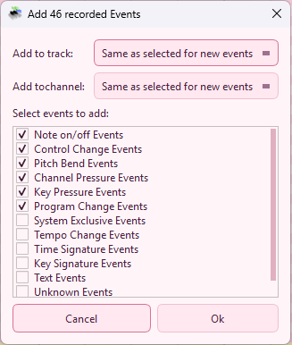

MidiEditor is able to record Midi data from an input device, e.g. a digital piano.
To start a recording, press the record button in the playback menu or in the toolbar. MidiEditor will start a playback (which will allow you to hear any in advance entered Midi events) and listen to the input device at the same time. Hence, played notes (and other events) which where entered using the input device can be added to the currently loaded Midi file which will add the events at the time they were played.

After a recording has been finished, click the stop button in the playback menu or in the toolbar. If any events have been recorded, a dialog will pop up which allows you to specify how to handle the recorded events.
You can ignore some event types. All events with this type will not be added to the file, all other events will be added at the time they have been played. You can specify the track and the channel of the recorded events in the dialog. Pressing "Ok" will add the events to the file.
After the events have been added, you may want to edit the events. This can include correcting wrong notes or adjusting the timing. Especially the quantization function will be useful in this context,